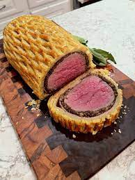

Beef Wellington

A traditional Beef Wellington consists of a beef tenderloin wrapped in layers
of pâté, duxelles (a finely chopped mushroom mixture), parma ham, and puff
pastry, then baked. Rumor has it that Beef Wellington got its name from
Arthur Wellesley, the 1st Duke of Wellington, who counted the dish among
his favorite recipes. Whether this is true or not, Beef Wellington has
become an iconic example of English cuisine, and follows a long tradition
of meats baked in pastry dough.
Ingredients
- 1 (2lbs) center-cut beef tenderloin, trimmed
- Kosher Salt
- Freshly ground black pepper
- extra-virgin olive oil
- 2 tbsp Dijon mustard
- 1 1/2 lb mixed mushrooms, roughly chopped
- 1 shallot, roughly chopped
- leaves from 1 thyme sprig
- 2tbsp unsalted butter
- 12 thin slices prosciutto
- all-purpose flour
- 14oz frozen puff pastry
- 1 large egg, beaten
- flaky salt
Instructions
- Using kitchen twine, tie tenderloin in 4 places.
Season generously with salt and pepper.
- Over high heat, coat bottom of a heavy skillet with olive oil.
Once pan is nearly smoking, sear tenderloin until well-browned on all
sides, including the ends, about 2 minutes per side (12 minutes total).
Transfer to a plate. When cool enough to handle, snip off twine and
coat all sides with mustard. Let cool in fridge.
- Meanwhile, make duxelles: In a food processor, pulse mushrooms,
shallots, and thyme until finely chopped.
- To skillet, add butter and melt over medium heat.
Add mushroom mixture and cook until liquid has evaporated,
about 25 minutes. Season with salt and pepper,
then let cool in fridge.
- Place plastic wrap down on a work surface, overlapping so that its
twice the length and width of the tenderloin. Shingle the prosciutto
on the plastic wrap into a rectangle thats big enough to cover the
whole tenderloin. Spread the duxelles evenly and thinly over the
prosciutto.
- Season tenderloin, then place it at the bottom of the prosciutto.
Roll meat into prosciutto-mushroom mixture, using plastic wrap to roll
tightly. Tuck ends of prosciutto as you roll, then twist ends of
plastic wrap tightly into a log and transfer to fridge to chill
(this helps it maintain its shape).
- Heat oven to 425°. Lightly flour your work surface, then spread out
puff pastry and roll it into a rectangle that will cover the
tenderloin (just a little bigger than the prosciutto rectangle you
just made!). Remove tenderloin from plastic wrap and place on bottom
of puff pastry. Brush the other three edges of the pastry with egg
wash, then tightly roll beef into pastry.
- Once the log is fully covered in puff pastry, trim any extra pastry,
then crimp edges with a fork to seal well.
Wrap roll in plastic wrap to get a really tight cylinder,
then chill for 20 minutes.
- Remove plastic wrap, then transfer roll to a foil-lined baking sheet.
Brush with egg wash and sprinkle with flaky salt.
- Bake until pastry is golden and the center registers 120°F for
medium-rare, about 40 to 45 minutes. Let rest 10 minutes before
carving and serving.